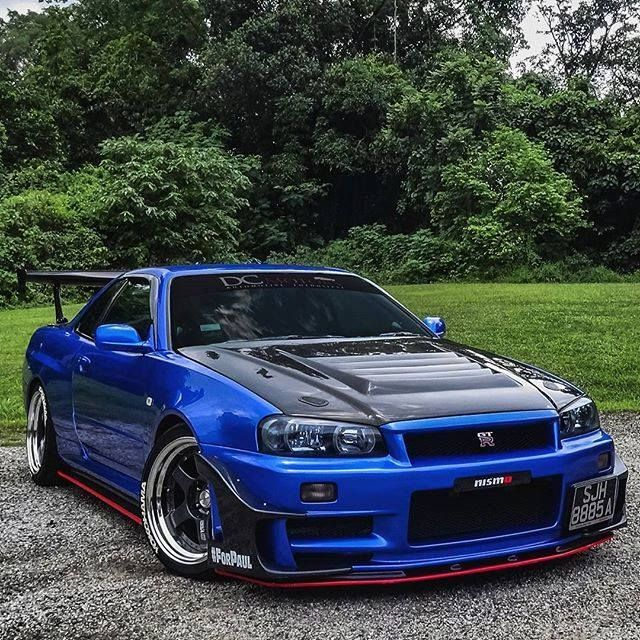

Erik Alonso Hernandez
Nissan.
Nissan skyline gtr r34.
El R34 supuso la combinación de dos elementos fundamentales: la turboalimentación, junto a la tracción a las cuatro ruedas. De esta forma, era capaz de detener el reloj, en la maniobra de aceleración de 0 a 100 km/h, en solo 4,7 segundos. Un registro impresionante, casi dos décadas después. Debajo del capó, encontramos una mecánica de 2,6 litros de cilindrada turboalimentada, que desarrollaba una potencia máxima de 276 CV. Al menos, de forma oficial, porque numerosas unidades de pruebas analizadas posteriormente, alcanzaban los 300 CV. La caja de cambios elegida era manual, con una relación de cambio corta.
Por otra parte, el Nissan Skyline GT-R R34equipó un sistema de tracción integral bastante avanzado a su tiempo, debido a que en condiciones normales mandaba toda la potencia a la ruedas traseras... hasta que el eje delantero necesitaba par motor. También incluía un sistema de dirección asistida a las cuatro ruedas, un aspecto que mejoraba la agilidad del conjunto.
En cambio, el interior resultaba un tanto decepcionante, si lo comparamos con los rivales de la época. Eso sí, la adopción de unos asientos deportivos con unos marcados respaldos, conseguía centrar todas las miradas del habitáculo. El cuadro de instrumentos contaba con una pantalla que mostraba datos técnicos en tiempo real, una auténtica delicatessen para los aficionados del deportivo japonés. De esta forma, el conductor podía conocer, a través de una pantalla digital de 5,8 pulgadas, datos sobre la presión de soplado del turbocompresor, las fuerzas G, temperatura del aceite, del líquido refrigerante, de la caja de cambios... así como los tiempos marcados por vueltas. Recuerda que hablamos del año 1999.
Precio de mercado: 60.000€